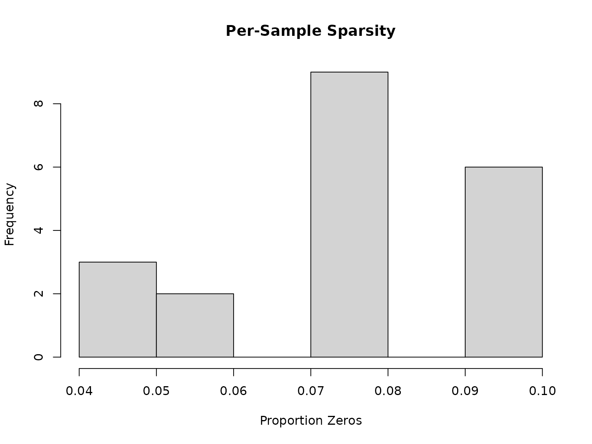
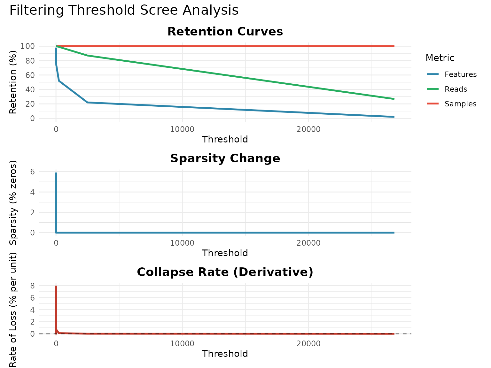

vignettes/tutorial.Rmd
tutorial.RmdThis tutorial provides a comprehensive guide to using the
featuretablefilter package for filtering microbiome feature
tables. We’ll cover:
Microbiome sequencing data often contains artifacts that can bias downstream analyses:
Proper filtering improves statistical power, computational efficiency, biological interpretability, and reproducibility across studies.
library(featuretablefilter)
# Load example feature table shipped with the package
data(example_feature_table)
head(example_feature_table[, 1:4])
#> #OTU ID Sample_001 Sample_002 Sample_003
#> 1 ASV_001 1245 892 1567
#> 2 ASV_002 567 423 689
#> 3 ASV_003 234 178 289
#> 4 ASV_004 89 67 112
#> 5 ASV_005 3456 2789 4123
#> 6 ASV_006 12345 10234 14567
dim(example_feature_table)
#> [1] 50 21load_feature_table() auto-detects format (TSV vs CSV)
and header presence:
file_path <- system.file("extdata", "example_feature_table.tsv",
package = "featuretablefilter")
table <- load_feature_table(file_path)
head(table[, 1:4])
#> #OTU ID Sample_001 Sample_002 Sample_003
#> 1 ASV_001 1245 892 1567
#> 2 ASV_002 567 423 689
#> 3 ASV_003 234 178 289
#> 4 ASV_004 89 67 112
#> 5 ASV_005 3456 2789 4123
#> 6 ASV_006 12345 10234 14567
library(phyloseq)
ps <- readRDS("my_phyloseq_object.rds")
table <- from_phyloseq(ps, include_taxa = TRUE)| Method | Best For | Not Recommended For | Description |
|---|---|---|---|
none |
When you want to keep all samples | Low-quality datasets | No coverage filtering |
absolute |
Uniform sequencing depth across samples | Highly variable depth | Fixed minimum read count threshold |
mad |
Most standard datasets | Very small sample sizes (<10) | Statistical outlier detection using MAD |
iqr |
Datasets with non-normal coverage distribution | Small sample sizes | Tukey’s fences method |
good |
Traditional OTU data, ecological diversity studies | DADA2/Deblur ASV data (denoising changes error structure) | Filters by estimated ecological completeness |
chao |
Traditional OTU data, conservative rare biosphere studies | DADA2/Deblur ASV data (assumes random sampling) | More conservative than Good’s coverage |
If you used DADA2 or Deblur (ASV-level resolution):
mad or iqr coverage
methods (NOT Good’s/Chao’s): Statistical outlier detection is
more appropriate because DADA2’s denoising changes the error structure
and produces variable sequencing depths naturally.
data(example_feature_table)
result <- run_filtering_pipeline(
input = example_feature_table,
output_dir = tempdir(),
prefix = "dada2_example",
cov_filter_method = "mad",
cov_threshold = 2,
abun_filter_method = "joint",
abun_threshold = 0.0001,
abun_prevalence_threshold = 0.05,
abun_logic = "OR",
crosstalk_filter_method = "none",
singleton_filter_method = "none",
generate_report = FALSE,
verbose = FALSE
)
#> Evaluating 20 threshold values...
#> Completed 4/20 (threshold = 1.6316)
#> Completed 8/20 (threshold = 2.4737)
#> Completed 12/20 (threshold = 3.3158)
#> Completed 16/20 (threshold = 4.1579)
#> Completed 20/20 (threshold = 5.0000)
#>
#> Scree analysis complete.
#> Elbow point: threshold = 1.2105, retention = 100.0%
#> Final retention: 100.0% at threshold = 5.0000
#> Warning: Removed 4 rows containing missing values or values outside the scale range
#> (`geom_line()`).
#> Warning: Removed 1 row containing missing values or values outside the scale range
#> (`geom_hline()`).
#> Warning: Removed 1 row containing missing values or values outside the scale range
#> (`geom_line()`).
result$filtering_summary$coverage$n_samples_after
#> NULLOTU tables are more robust to some artifacts but still benefit from filtering:
data(example_feature_table)
result <- run_filtering_pipeline(
input = example_feature_table,
output_dir = tempdir(),
prefix = "otu_example",
cov_filter_method = "mad",
cov_threshold = 2,
abun_filter_method = "absolute",
abun_threshold = 5,
singleton_filter_method = "absolute",
singleton_max_ratio = 0.15,
generate_report = FALSE,
verbose = FALSE
)
#> Evaluating 20 threshold values...
#> Completed 4/20 (threshold = 1.6316)
#> Completed 8/20 (threshold = 2.4737)
#> Completed 12/20 (threshold = 3.3158)
#> Completed 16/20 (threshold = 4.1579)
#> Completed 20/20 (threshold = 5.0000)
#>
#> Scree analysis complete.
#> Elbow point: threshold = 1.2105, retention = 100.0%
#> Final retention: 100.0% at threshold = 5.0000
#> Warning: Removed 4 rows containing missing values or values outside the scale range
#> (`geom_line()`).
#> Warning: Removed 1 row containing missing values or values outside the scale range
#> (`geom_hline()`).
#> Warning: Removed 1 row containing missing values or values outside the scale range
#> (`geom_line()`).
result$filtering_summary$abundance$n_features_after
#> NULL
data(example_feature_table)
result <- run_filtering_pipeline(
input = example_feature_table,
output_dir = tempdir(),
prefix = "16s_example",
cov_filter_method = "absolute",
cov_threshold = 1000,
abun_filter_method = "relative",
abun_threshold = 0.001,
generate_plots = TRUE,
generate_report = FALSE,
verbose = FALSE
)
#> Evaluating 20 threshold values...
#> Completed 4/20 (threshold = 1.6316)
#> Completed 8/20 (threshold = 2.4737)
#> Completed 12/20 (threshold = 3.3158)
#> Completed 16/20 (threshold = 4.1579)
#> Completed 20/20 (threshold = 5.0000)
#>
#> Scree analysis complete.
#> Elbow point: threshold = 1.2105, retention = 100.0%
#> Final retention: 100.0% at threshold = 5.0000
#> Warning: Removed 4 rows containing missing values or values outside the scale range
#> (`geom_line()`).
#> Warning: Removed 1 row containing missing values or values outside the scale range
#> (`geom_hline()`).
#> Warning: Removed 1 row containing missing values or values outside the scale range
#> (`geom_line()`).
result$filtering_summary$coverage$n_samples_after
#> NULLMetagenomic feature tables (gene families, pathways) have different characteristics:
data(example_feature_table)
result <- run_filtering_pipeline(
input = example_feature_table,
output_dir = tempdir(),
prefix = "metagenome_example",
cov_filter_method = "iqr",
cov_threshold = 1.5,
abun_filter_method = "absolute",
abun_threshold = 10,
abun_min_samples = 3,
run_scree_analysis = TRUE,
generate_report = FALSE,
verbose = FALSE
)
#> Evaluating 20 threshold values...
#> Completed 4/20 (threshold = 1.6316)
#> Completed 8/20 (threshold = 2.4737)
#> Completed 12/20 (threshold = 3.3158)
#> Completed 16/20 (threshold = 4.1579)
#> Completed 20/20 (threshold = 5.0000)
#>
#> Scree analysis complete.
#> Elbow point: threshold = 1.2105, retention = 100.0%
#> Final retention: 100.0% at threshold = 5.0000
#> Warning: Removed 4 rows containing missing values or values outside the scale range
#> (`geom_line()`).
#> Warning: Removed 1 row containing missing values or values outside the scale range
#> (`geom_hline()`).
#> Warning: Removed 1 row containing missing values or values outside the scale range
#> (`geom_line()`).
result$filtering_summary$abundance$n_features_after
#> NULL| Method | Best For | Description |
|---|---|---|
none |
When keeping all features | No abundance filtering |
absolute |
Standard datasets | Remove features below fixed read count |
relative |
Normalized/compositional analyses | Remove features below relative abundance |
relative_cutoff |
Variable sequencing depth | Threshold based on min-coverage sample |
joint |
Most versatile, balances sensitivity/specificity | Combined abundance AND/OR prevalence |
data(example_feature_table)
result <- run_filtering_pipeline(
input = example_feature_table,
output_dir = tempdir(),
prefix = "analysis1",
cov_filter_method = "good",
cov_target_coverage = 0.95,
abun_filter_method = "joint",
abun_threshold = 0.001,
abun_prevalence_threshold = 0.2,
abun_logic = "OR",
singleton_filter_method = "none",
crosstalk_filter_method = "none",
sparsity_elbow_detect = TRUE,
depth_sparsity_detect = TRUE,
run_scree_analysis = TRUE,
apply_sparsity_elbow = FALSE,
apply_depth_sparsity_outliers = FALSE,
generate_plots = TRUE,
generate_report = FALSE,
verbose = FALSE
)
#> Evaluating 20 threshold values...
#> Completed 4/20 (threshold = 1.6316)
#> Completed 8/20 (threshold = 2.4737)
#> Completed 12/20 (threshold = 3.3158)
#> Completed 16/20 (threshold = 4.1579)
#> Completed 20/20 (threshold = 5.0000)
#>
#> Scree analysis complete.
#> Elbow point: threshold = 1.2105, retention = 100.0%
#> Final retention: 100.0% at threshold = 5.0000
#> Warning: Removed 4 rows containing missing values or values outside the scale range
#> (`geom_line()`).
#> Warning: Removed 1 row containing missing values or values outside the scale range
#> (`geom_hline()`).
#> Warning: Removed 1 row containing missing values or values outside the scale range
#> (`geom_line()`).
nrow(result$filtered_table)
#> [1] 31
ncol(result$filtered_table)
#> [1] 21
library(phyloseq)
ps <- readRDS("my_data.rds")
result <- run_filtering_pipeline(
input = ps,
prefix = "ps_filtered",
cov_filter_method = "good",
abun_filter_method = "joint",
generate_plots = TRUE,
generate_report = FALSE,
verbose = FALSE
)
filtered_ps <- result$filtered_table
class(filtered_ps)
library(TreeSummarizedExperiment)
tse <- readRDS("my_tse.rds")
result <- run_filtering_pipeline(
input = tse,
prefix = "tse_filtered",
cov_filter_method = "mad",
abun_filter_method = "absolute",
abun_threshold = 10,
generate_report = FALSE,
verbose = FALSE
)
filtered_tse <- result$filtered_table
class(filtered_tse)
names(result)
#> [1] "original_table" "filtered_table" "qc_metrics"
#> [4] "presence_stats" "filtering_summary" "sparsity_elbow_result"
#> [7] "depth_sparsity_result" "scree_result" "input_class"
str(result$qc_metrics)
#> List of 26
#> $ sparsity_original : num 0.078
#> $ sparsity_filtered : num 0
#> $ sparsity_drop_percent : num 7.8
#> $ read_retention_percent : num 99.6
#> $ feature_retention_percent : num 62
#> $ sample_retention_percent : num 100
#> $ rank_abundance_correlation : Named num 1
#> ..- attr(*, "names")= chr "rho"
#> $ rank_abundance_pvalue : num 0
#> $ pearson_abundance_correlation: Named num 1
#> ..- attr(*, "names")= chr "cor"
#> $ pearson_abundance_pvalue : num 0
#> $ top_n_overlap_count : int 10
#> $ top_n_overlap_percent : num 100
#> $ top_n_jaccard_similarity : num 1
#> $ orig_top_features : chr [1:10] "ASV_015" "ASV_006" "ASV_016" "ASV_041" ...
#> $ orig_top_rels : num [1:10] 0.268 0.1434 0.0979 0.0748 0.0652 ...
#> $ filt_top_features : chr [1:10] "ASV_015" "ASV_006" "ASV_016" "ASV_041" ...
#> $ filt_top_rels : Named num [1:10] 0.269 0.144 0.0983 0.0751 0.0655 ...
#> ..- attr(*, "names")= chr [1:10] "15" "6" "16" "41" ...
#> $ procrustes_m2 : num 2.81e-16
#> $ procrustes_correlation : num 1
#> $ procrustes_pvalue : num 0.001
#> $ shannon_ens_original : num 13.2
#> $ shannon_ens_filtered : num 12.9
#> $ shannon_ens_retention_percent: num 97.6
#> $ simpson_ens_original : num 8.2
#> $ simpson_ens_filtered : num 8.13
#> $ simpson_ens_retention_percent: num 99.2When publishing, report these metrics:
qc <- result$qc_metrics
cat(sprintf("Initial dataset: %d features, %d samples\\n",
nrow(result$original_table), ncol(result$original_table) - 1))
#> Initial dataset: 50 features, 20 samples\n
cat(sprintf("After filtering: %d features, %d samples\\n",
nrow(result$filtered_table), ncol(result$filtered_table) - 1))
#> After filtering: 31 features, 20 samples\n
cat(sprintf("\\nRetention rates:\\n"))
#> \nRetention rates:\n
cat(sprintf(" Features: %.1f%% (%d removed)\\n",
qc$feature_retention_percent,
nrow(result$original_table) - nrow(result$filtered_table)))
#> Features: 62.0% (19 removed)\n
cat(sprintf(" Samples: %.1f%% (%d removed)\\n",
qc$sample_retention_percent,
ncol(result$original_table) - ncol(result$filtered_table) - 1))
#> Samples: 100.0% (-1 removed)\n
cat(sprintf(" Reads: %.1f%%\\n", qc$read_retention_percent))
#> Reads: 99.6%\n
cat(sprintf("\\nSparsity: %.1f%% -> %.1f%% (%.1f pp improvement)\\n",
qc$sparsity_original * 100,
qc$sparsity_filtered * 100,
qc$sparsity_drop_percent))
#> \nSparsity: 7.8% -> 0.0% (7.8 pp improvement)\nIdentifies the sequencing depth where ASV discovery crashes:
elbow <- result$sparsity_elbow_result
cat(elbow$recommendation)
#> Consider filtering out 13 samples (65.0%) below depth 87971 reads. These samples show sharp richness decline indicating undersampling.Sometimes you want more control than the pipeline provides.
# Coverage per sample
coverages <- colSums(example_feature_table[, -1])
summary(coverages)
#> Min. 1st Qu. Median Mean 3rd Qu. Max.
#> 58389 66966 79812 78974 88592 102396
# Histogram of coverages
plot_coverage_histogram(example_feature_table, threshold = 1000)
# Calculate sparsity
sparsities <- apply(example_feature_table[, -1], 2, function(x) mean(x == 0))
hist(sparsities, main = "Per-Sample Sparsity", xlab = "Proportion Zeros")
# Option A: MAD-based
mad_est <- estimate_mad_cutoff(example_feature_table, multiplier = 2, floor = 500)
cat(sprintf("MAD recommendation: >= %.0f reads\\n", mad_est$cutoff))
#> MAD recommendation: >= 47624 reads\n
# Option B: Good's coverage
good_est <- estimate_good_coverage(example_feature_table, target_coverage = 0.95)
cat(sprintf("Good's coverage: mean=%.2f%%, min=%.2f%%\\n",
good_est$mean_coverage * 100, good_est$min_coverage * 100))
#> Good's coverage: mean=100.00%, min=100.00%\n
filtered <- filter_by_coverage(example_feature_table, min_reads = mad_est$cutoff)
cat(sprintf("Removed %d low-coverage samples\\n",
attr(filtered, "n_filtered_out")))
scree <- compute_scree(filtered, type = "absolute_feature", n_steps = 10, verbose = FALSE)
plot_scree(scree)
#> Warning: Removed 1 row containing missing values or values outside the scale range
#> (`geom_line()`).
final <- filter_features_by_abundance(
filtered,
threshold = 0.001,
mode = "relative",
min_samples = 2
)
cat(sprintf("Removed %d rare features\\n",
attr(final, "n_filtered_out")))
#> Removed 19 rare features\n
qc <- compute_filtering_qc(example_feature_table, final)
print(qc[c("sparsity_original", "sparsity_filtered",
"read_retention_percent", "feature_retention_percent")])
#> $sparsity_original
#> [1] 0.078
#>
#> $sparsity_filtered
#> [1] 0.05322581
#>
#> $read_retention_percent
#> [1] 99.46172
#>
#> $feature_retention_percent
#> [1] 62
data(example_feature_table)
result <- run_filtering_pipeline(
input = example_feature_table,
output_dir = tempdir(),
prefix = "quick_qc",
cov_filter_method = "mad",
cov_threshold = 2,
abun_filter_method = "absolute",
abun_threshold = 5,
generate_plots = TRUE,
generate_report = FALSE,
verbose = FALSE
)
#> Evaluating 20 threshold values...
#> Completed 4/20 (threshold = 1.6316)
#> Completed 8/20 (threshold = 2.4737)
#> Completed 12/20 (threshold = 3.3158)
#> Completed 16/20 (threshold = 4.1579)
#> Completed 20/20 (threshold = 5.0000)
#>
#> Scree analysis complete.
#> Elbow point: threshold = 1.2105, retention = 100.0%
#> Final retention: 100.0% at threshold = 5.0000
#> Warning: Removed 4 rows containing missing values or values outside the scale range
#> (`geom_line()`).
#> Warning: Removed 1 row containing missing values or values outside the scale range
#> (`geom_hline()`).
#> Warning: Removed 1 row containing missing values or values outside the scale range
#> (`geom_line()`).
result$qc_metrics$feature_retention_percent
#> [1] 86
data(example_feature_table)
result <- run_filtering_pipeline(
input = example_feature_table,
output_dir = tempdir(),
prefix = "conservative",
cov_filter_method = "good",
cov_target_coverage = 0.95,
abun_filter_method = "joint",
abun_threshold = 0.0001,
abun_prevalence_threshold = 0.05,
abun_logic = "OR",
generate_plots = TRUE,
generate_report = FALSE,
verbose = FALSE
)
#> Evaluating 20 threshold values...
#> Completed 4/20 (threshold = 1.6316)
#> Completed 8/20 (threshold = 2.4737)
#> Completed 12/20 (threshold = 3.3158)
#> Completed 16/20 (threshold = 4.1579)
#> Completed 20/20 (threshold = 5.0000)
#>
#> Scree analysis complete.
#> Elbow point: threshold = 1.2105, retention = 100.0%
#> Final retention: 100.0% at threshold = 5.0000
#> Warning: Removed 4 rows containing missing values or values outside the scale range
#> (`geom_line()`).
#> Warning: Removed 1 row containing missing values or values outside the scale range
#> (`geom_hline()`).
#> Warning: Removed 1 row containing missing values or values outside the scale range
#> (`geom_line()`).
result$qc_metrics$sample_retention_percent
#> [1] 100
data(example_feature_table)
result <- run_filtering_pipeline(
input = example_feature_table,
output_dir = tempdir(),
prefix = "stringent",
cov_filter_method = "iqr",
cov_threshold = 2,
abun_filter_method = "absolute",
abun_threshold = 50,
abun_min_samples = 5,
singleton_filter_method = "absolute",
singleton_max_ratio = 0.10,
generate_report = FALSE,
verbose = FALSE
)
#> Evaluating 20 threshold values...
#> Completed 4/20 (threshold = 1.6316)
#> Completed 8/20 (threshold = 2.4737)
#> Completed 12/20 (threshold = 3.3158)
#> Completed 16/20 (threshold = 4.1579)
#> Completed 20/20 (threshold = 5.0000)
#>
#> Scree analysis complete.
#> Elbow point: threshold = 1.2105, retention = 100.0%
#> Final retention: 100.0% at threshold = 5.0000
#> Warning: Removed 4 rows containing missing values or values outside the scale range
#> (`geom_line()`).
#> Warning: Removed 1 row containing missing values or values outside the scale range
#> (`geom_hline()`).
#> Warning: Removed 1 row containing missing values or values outside the scale range
#> (`geom_line()`).
result$qc_metrics$read_retention_percent
#> [1] 99.7244
coverages <- colSums(example_feature_table[, -1])
summary(coverages)
#> Min. 1st Qu. Median Mean 3rd Qu. Max.
#> 58389 66966 79812 78974 88592 102396
result <- filter_by_coverage_estimator(
example_feature_table,
method = "good",
target_coverage = 0.90,
verbose = FALSE
)
ncol(result$table)
#> [1] 21
result <- filter_features_joint(
example_feature_table,
abundance_threshold = 0.001,
prevalence_threshold = 0.1,
logic = "OR"
)
result$n_features_after
#> [1] 31
filtered <- filter_features_by_abundance(
example_feature_table,
threshold = 2,
mode = "absolute",
min_samples = 2
)
nrow(filtered)
#> [1] 45
qc <- compute_filtering_qc(example_feature_table, final)
if (qc$sample_retention_percent < 70) {
message("Consider relaxing coverage filter")
} else {
message("Sample retention is acceptable")
}
#> Sample retention is acceptableFor reproducibility, always record your session info:
sessionInfo()
#> R version 4.6.1 (2026-06-24)
#> Platform: x86_64-pc-linux-gnu
#> Running under: Ubuntu 24.04.4 LTS
#>
#> Matrix products: default
#> BLAS: /usr/lib/x86_64-linux-gnu/openblas-pthread/libblas.so.3
#> LAPACK: /usr/lib/x86_64-linux-gnu/openblas-pthread/libopenblasp-r0.3.26.so; LAPACK version 3.12.0
#>
#> locale:
#> [1] LC_CTYPE=C.UTF-8 LC_NUMERIC=C LC_TIME=C.UTF-8
#> [4] LC_COLLATE=C.UTF-8 LC_MONETARY=C.UTF-8 LC_MESSAGES=C.UTF-8
#> [7] LC_PAPER=C.UTF-8 LC_NAME=C LC_ADDRESS=C
#> [10] LC_TELEPHONE=C LC_MEASUREMENT=C.UTF-8 LC_IDENTIFICATION=C
#>
#> time zone: UTC
#> tzcode source: system (glibc)
#>
#> attached base packages:
#> [1] stats graphics grDevices utils datasets methods base
#>
#> other attached packages:
#> [1] featuretablefilter_0.99.0 BiocStyle_2.40.0
#>
#> loaded via a namespace (and not attached):
#> [1] tidyr_1.3.2 sass_0.4.10 generics_0.1.4
#> [4] lattice_0.22-9 digest_0.6.39 magrittr_2.0.5
#> [7] evaluate_1.0.5 grid_4.6.1 RColorBrewer_1.1-3
#> [10] bookdown_0.47 fastmap_1.2.0 Matrix_1.7-5
#> [13] jsonlite_2.0.0 BiocManager_1.30.27 mgcv_1.9-4
#> [16] purrr_1.2.2 scales_1.4.0 permute_0.9-10
#> [19] textshaping_1.0.5 jquerylib_0.1.4 cli_3.6.6
#> [22] rlang_1.3.0 splines_4.6.1 withr_3.0.3
#> [25] cachem_1.1.0 yaml_2.3.12 otel_0.2.0
#> [28] vegan_2.7-5 tools_4.6.1 parallel_4.6.1
#> [31] dplyr_1.2.1 ggplot2_4.0.3 BiocGenerics_0.58.1
#> [34] vctrs_0.7.3 R6_2.6.1 stats4_4.6.1
#> [37] zoo_1.8-15 lifecycle_1.0.5 S4Vectors_0.50.1
#> [40] fs_2.1.0 htmlwidgets_1.6.4 MASS_7.3-65
#> [43] ragg_1.5.2 cluster_2.1.8.2 pkgconfig_2.0.3
#> [46] desc_1.4.3 pkgdown_2.2.1 pillar_1.11.1
#> [49] bslib_0.11.0 gtable_0.3.6 glue_1.8.1
#> [52] systemfonts_1.3.2 xfun_0.60 tibble_3.3.1
#> [55] tidyselect_1.2.1 knitr_1.51 farver_2.1.2
#> [58] patchwork_1.3.2 nlme_3.1-169 htmltools_0.5.9
#> [61] labeling_0.4.3 rmarkdown_2.31 pheatmap_1.0.13
#> [64] compiler_4.6.1 S7_0.2.2help(package = "featuretablefilter")
?run_filtering_pipeline